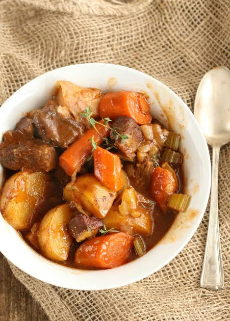

Price
₱280
About this Dish
Slow-braised beef brisket simmered for hours in a rich savory sauce with vegetables and carefully selected herbs.

₱280
Slow-braised beef brisket simmered for hours in a rich savory sauce with vegetables and carefully selected herbs.